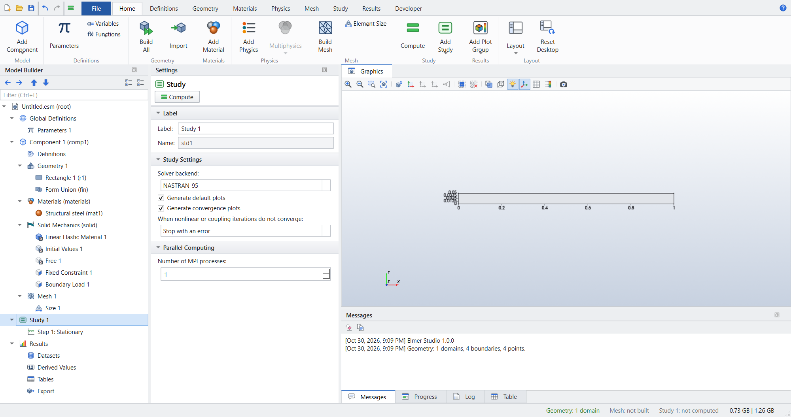
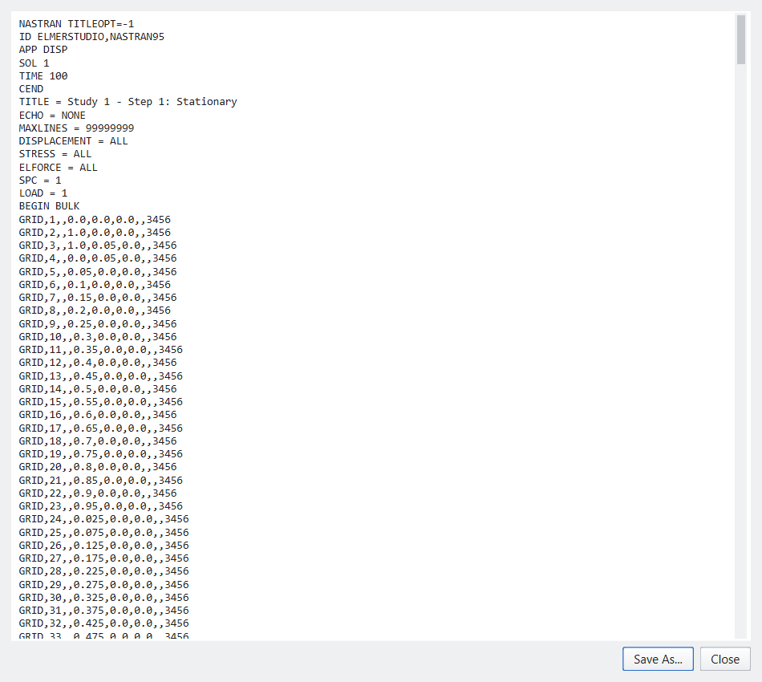
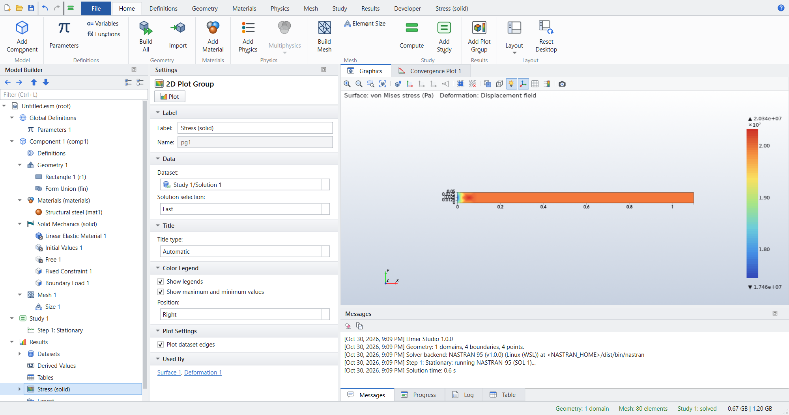
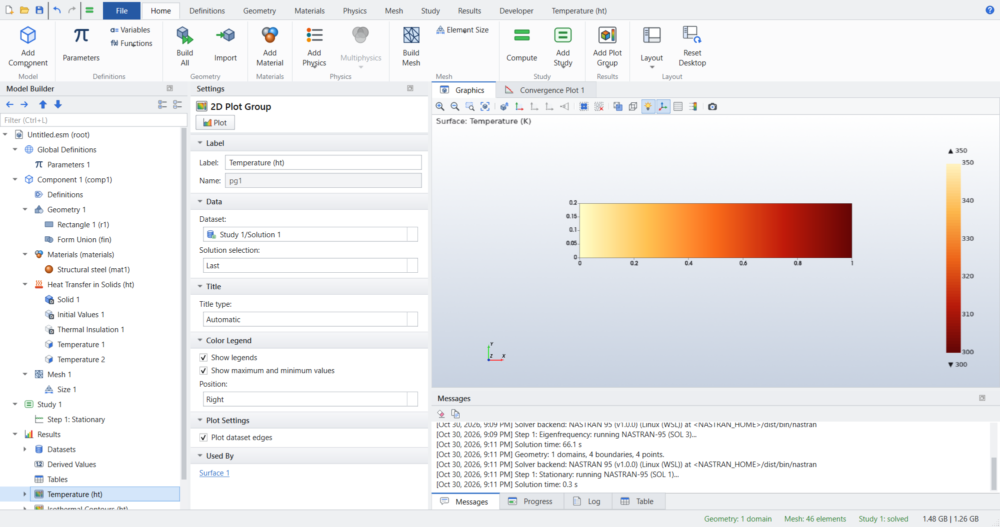
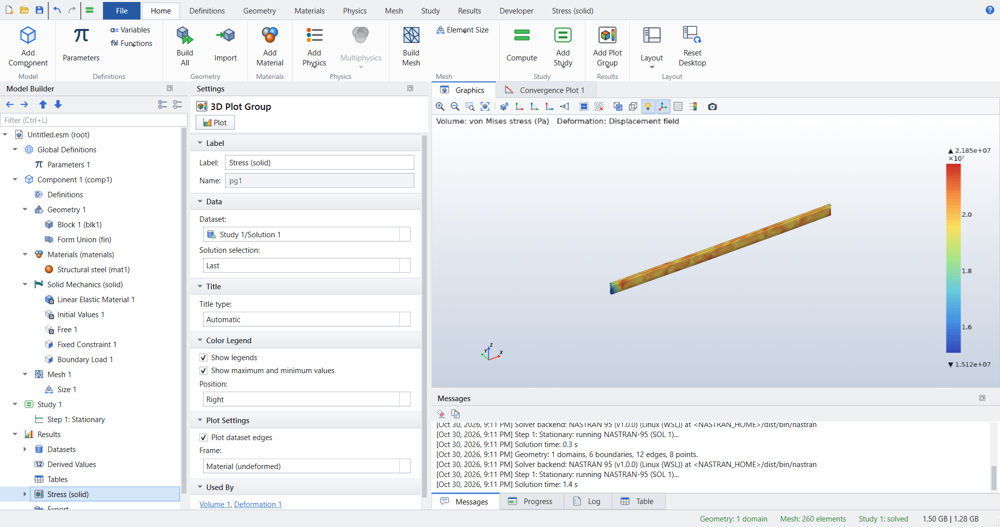

NASTRAN-95: One Model, Two Solvers
Elmer Studio can hand a study to NASTRAN-95, the public-domain release of NASA’s structural analysis program, instead of ElmerSolver. You build the model once; a single setting on the study decides which program solves it. In this tutorial you solve four small models with NASTRAN-95, read its input deck, compare the results with closed-form solutions, and solve the same models with Elmer to see both programs agree.
-
Switch a study between the Elmer and NASTRAN-95 backends.
-
Read the NASTRAN-95 Bulk Data deck that Elmer Studio writes.
-
Solve linear statics (SOL 1), normal modes (SOL 3) and steady heat conduction (HEAT 1) in 2D and 3D.
-
Judge the accuracy of NASTRAN-95’s linear elements, and refine the mesh where they need it.
| Model | Physics and study | Closed-form check | NASTRAN-95 (Elmer) |
|---|---|---|---|
Axial bar, 2D |
Solid Mechanics, Stationary |
elongation σL/E = 0.100 mm, stress 20 MPa |
0.0999 mm, 20.00 MPa (0.0999 mm, 20.00 MPa) |
Cantilever, 2D |
Solid Mechanics, Eigenfrequency |
first bending frequency 40.77 Hz |
41.13 Hz (40.72 Hz) |
Plate, 2D |
Heat Transfer in Solids, Stationary |
linear temperature, 350 K to 300 K |
within 0.0002 K (exact) |
Axial bar, 3D |
Solid Mechanics, Stationary |
elongation PL/EA = 0.100 mm |
0.1014 mm (0.0998 mm) |
The static and heat models solve in a second or two, the eigenfrequencies in about a minute.
The same models run in the automated test suite (tests/test_nastran.py) and as scripts in examples/nastran.
Before you start: install NASTRAN-95
-
Download a NASTRAN-95 release for your system from Foadsf/NASTRAN-95/releases (Windows, Linux and macOS) and unpack it. On Windows you can also use a Linux build inside WSL.
-
Open and set NASTRAN-95 installation folder to the unpacked folder, the one that contains
nastran(ordist/bin/nastran) and therffolder. The line under the field confirms the installation it found. For a build inside WSL, set the environment variableNASTRAN_WSL_HOMEto its Linux path instead, for example/home/<user>/NASTRAN-95, and restart Elmer Studio.
See NASTRAN-95 backend for the full lookup order.
Part 1: Axial bar in tension
A steel bar 1 m long and 50 mm high is fixed at its left end and pulled at the right end by a stress of 20 MPa. In 2D, Elmer Studio models a slice of unit depth; with plane stress the bar stretches by σL/E = 20 MPa · 1 m / 200 GPa = 0.1 mm, and the stress is 20 MPa everywhere.
Build the model
-
Click and choose Model Wizard. Choose 2D, add Structural Mechanics › Solid Mechanics (solid), and choose the Stationary study.
-
Click Geometry 1, then . Set Width to
1[m]and Height to5[cm], and press F8 (Build All Objects). -
Click and add Built-in › Structural steel. It covers the whole bar: E = 200 GPa, ν = 0.3.
-
Click Solid Mechanics (solid) and set 2D approximation to
Plane stress. -
Click and click the left edge.
-
Click Solid Mechanics (solid) again, click and click the right edge. Keep Load type
Force per unit areaand set F_A x to20[MPa]. -
On the Mesh ribbon, click . Click Size 1, set Element size to
Custom, Maximum element size to5[cm]and Minimum element size to2[cm].
Choose NASTRAN-95
-
Click Study 1. In the section Study Settings, set Solver backend to
NASTRAN-95.
Figure 1. Study 1 solved by NASTRAN-95
The ribbon button Show Elmer Input File becomes Show NASTRAN Input Deck. If NASTRAN-95 cannot solve the model, Compute is unavailable and its tooltip gives the reason.
Read the input deck
-
Click .

Figure 2. The NASTRAN-95 input deck
The deck has three parts:
-
the Executive Control (
APP DISP,SOL 1): linear statics; -
the Case Control: which constraint and load sets to use (
SPC = 1,LOAD = 1) and which results to print; -
the Bulk Data: a
GRIDcard for every mesh node, the material (MAT1), the 2D property (PSHELL, unit thickness), the elements, the constraints (SPC1) and the loads (FORCE).
Every 6-node triangle of the mesh is written as four 3-node CTRIA3 elements that share its nodes, because NASTRAN-95 has no 6-node triangle that reproduces a uniform stress exactly.
The 20 MPa on the right edge appears as nodal forces: the stress times the edge area of each element side, shared by its nodes.
Save As… writes the deck to a .bdf file that you can run with NASTRAN-95 by hand.
Solve and look at the stress
-
Click .
The Log window shows NASTRAN-95’s output, ending with END OF JOB.
Results gets the Stress (solid) plot group: the von Mises stress on the deformed bar.

Check the results
Click the plot at the right end of the bar to read the values there (see Results), or evaluate u and solid.mises with a Point Evaluation.
| Quantity | Theory | NASTRAN-95 | Elmer |
|---|---|---|---|
Elongation at x = 1 m |
0.1000 mm |
0.0999 mm |
0.0999 mm |
Von Mises stress |
20.00 MPa |
20.00 MPa |
20.00 MPa |
To see Elmer’s answer, set Solver backend back to Elmer and compute again.
The elongation is 0.1 % short of σL/E in both programs, because the clamped end also stops the bar from narrowing there.
Part 2: Eigenfrequencies of a cantilever
The same bar, clamped at the left end and free at the right, vibrates in bending. Euler–Bernoulli beam theory gives its first frequency as
f1 = 1.8751² / (2π L²) · √(E h² / (12 ρ)) = 40.77 Hz
for L = 1 m, h = 50 mm and ρ = 7850 kg/m³, and the second as 6.267 times the first.
-
Start a new 2D model with Solid Mechanics and the Eigenfrequency study, and repeat the geometry, material, 2D approximation
Plane stressand Fixed Constraint of Part 1. There is no load. -
On the Mesh ribbon, click . In Size 1, set Maximum element size to
12.5[mm]and Minimum element size to5[mm]: four elements through the depth of the beam. -
Click Study 1, set Solver backend to
NASTRAN-95, and click .
NASTRAN-95 solves rigid format 3 (normal modes) with the FEER method and returns the six lowest modes, as many as Desired number of eigenfrequencies asks for. The Mode Shape (solid) plot group shows the first mode; choose the others under Eigenfrequency in its settings.

Check the results
| Quantity | Beam theory | NASTRAN-95 | Elmer |
|---|---|---|---|
f1 |
40.77 Hz |
41.13 Hz |
40.72 Hz |
f2 |
255.5 Hz |
254.8 Hz |
252.3 Hz |
f2/f1 |
6.267 |
6.195 |
6.195 |
Both programs give the same mode shapes. NASTRAN-95’s frequencies are 1 % higher than Elmer’s because its 3-node triangles are stiffer in bending than Elmer’s 6-node triangles. With the coarser 5 cm mesh of Part 1, one element through the depth, the difference would be about 10 %: for bending, give NASTRAN-95 at least four linear elements through the thickness. Both programs fall below beam theory for f2, which ignores shear and rotary inertia.
Part 3: Steady heat conduction
A steel plate 1 m by 20 cm is held at 350 K on its left edge and 300 K on its right edge; the other edges are insulated. The temperature falls linearly from left to right.
-
Start a new 2D model with Heat Transfer › Heat Transfer in Solids (ht) and the Stationary study.
-
Draw a rectangle of Width
1[m]and Height20[cm], and add Structural steel. -
Click , click the left edge and set Temperature to
350[K]. Add a second Temperature on the right edge with300[K]. -
Add a Free Triangular mesh with a Size of
10[cm]maximum and5[cm]minimum. -
Set the study’s Solver backend to
NASTRAN-95and click .
NASTRAN-95 runs its heat transfer approach (APP HEAT) with the fixed temperatures as SPC cards.

Part 4: Axial bar in 3D
-
Start a new 3D model with Solid Mechanics and the Stationary study.
-
Click Geometry 1, then . Set Width
1[m], Depth1[cm]and Height5[cm], build it, and add Structural steel. -
Add a Fixed Constraint on the face at x = 0 and a Boundary Load on the face at x = 1 m with Load type
Total forceand F_tot x10[kN]. -
Add a Free Tetrahedral mesh with a Size of
10[cm]maximum and5[cm]minimum. -
Set the study’s Solver backend to
NASTRAN-95and click .
Each 10-node tetrahedron of the mesh becomes eight 4-node CTETRA elements.
The cross-section is 5 cm², so the stress is 20 MPa and the elongation PL/EA = 0.1 mm.

Check the results
| Quantity | Theory | NASTRAN-95 | Elmer |
|---|---|---|---|
Elongation at x = 1 m |
0.1000 mm |
0.1014 mm |
0.0998 mm |
Mean von Mises stress, 0.2 m < x < 0.8 m |
20.0 MPa |
20.1 MPa |
20.0 MPa |
In tension the linear tetrahedra do well: on this coarse mesh, with one element through the 1 cm depth, NASTRAN-95 is within 1.5 %. In bending they are much stiffer than Elmer’s quadratic ones: a 3D cantilever with one element through its depth deflects 40 % less with NASTRAN-95. The accuracy table lists the measured differences.
Run the models as scripts
The four models are also scripts in examples/nastran.
Each builds the model through the Python API, solves it with NASTRAN-95, prints the result next to the closed-form value, saves the .esm project and a picture:
python examples/nastran/axial_bar_2d.py
python examples/nastran/cantilever_modes_2d.py
python examples/nastran/heat_2d.py
python examples/nastran/axial_bar_3d.pySee Scripting a model in Python for the API.